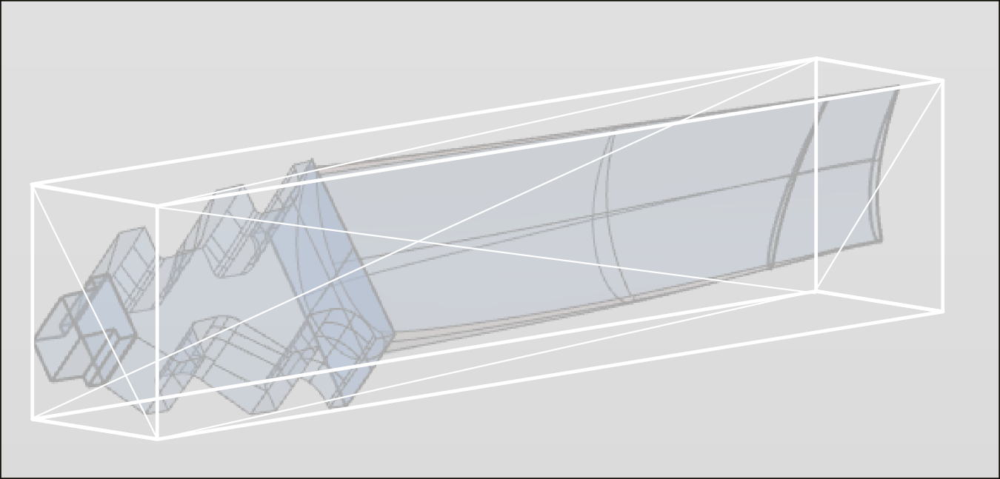

3.2. Using the Project Assistant
Use the Project Assistant to create a milling project or MillTurn project in a predefined sequence of steps. The following are defined in the individual steps:
-
Model and machining technology
-
NCS orientation
-
Stock size and allowances
-
NCS position
-
Machining frames
-
Names for joblist, milling area/turning area, stock as well as material and machine.
The steps can be in any order. Click OK to apply the settings you have defined. Click Cancel to close the Project Assistant without savings the settings.
Starting the Project Assistant
Go to the Jobs tab, right-click and select the → function.
|
Alternatively, start the Project Assistant via the → menu. |

Define model and machining technology
|
|
Model and Process: Select Milling technology to create a milling project or MillTurn technology to set up a MillTurn project. |
Use Surfaces to select the surfaces or solids to be machined.
Stock resolution: Defines the accuracy for calculating the tessellated bounding box used to create the stock.
|  |